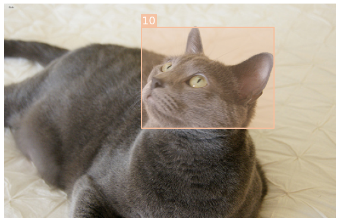
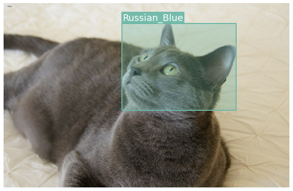
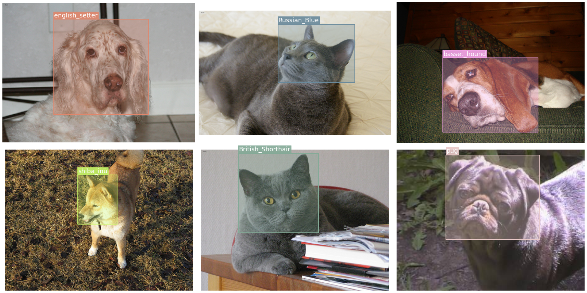
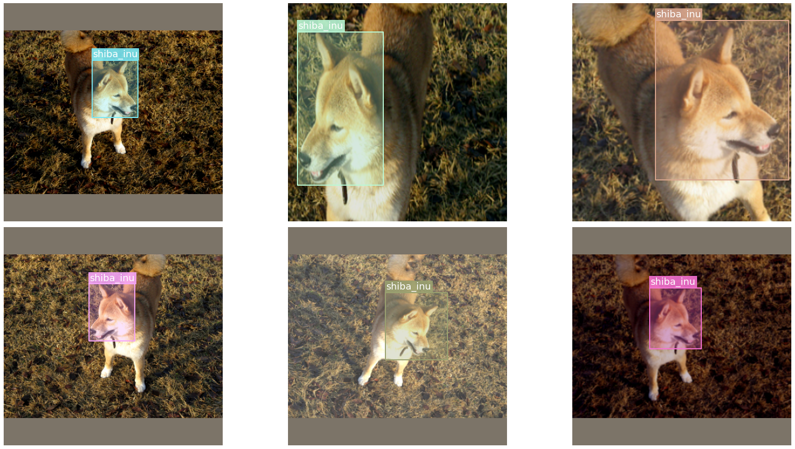
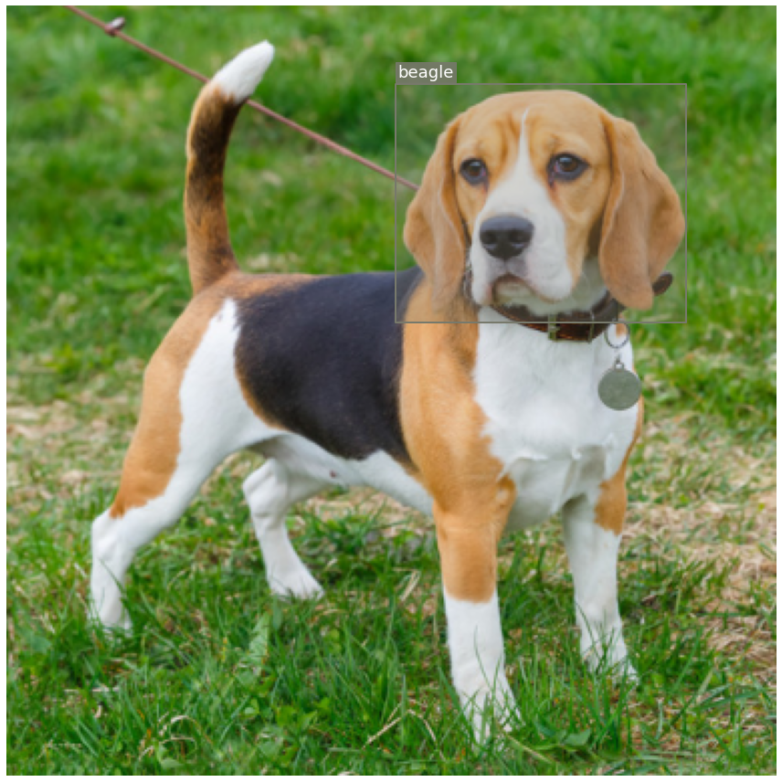
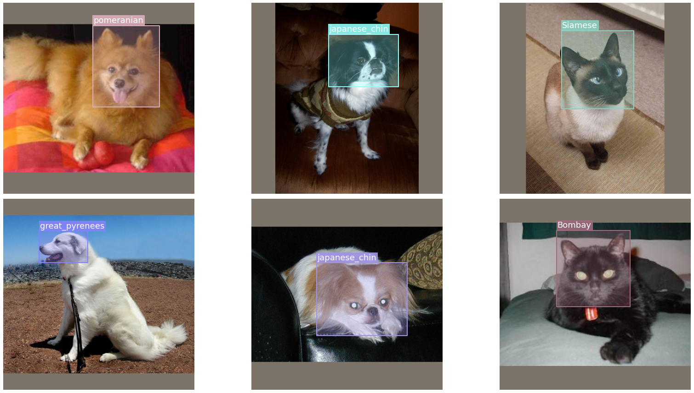

Getting started with IceVision
Why IceVision?
-
It is an Agnostic Object-Detection Library
-
Connects to different libraries/framework such as fastai, Pytorch Lightning, and Pytorch
-
Features a Unified Data API such: common Parsers (COCO, VOC, etc.)
-
Integrates community maintaned parsers for custom datasets shared on parsers hub
-
Provides flexible model implementations using different backbones
-
Helps both researchers and DL engineers in reproducing, replicating published models
-
Facilitates applying both existing and new models to standard datasets as well as to Scustom datasets
1- Introduction
This tutorial walk you throug the different steps of training the PETS dataset. the IceVision Framework is an agnostic framework. As an illustration, we will train our model using both the fastai2, and pytorch-lightning library.
2- Using Google Colab
First, enable the GPU runtime:
Runtime -> Change runtime type -> Hardware accelerator dropdown -> GPU
3- Packages Installations
# Install IceVision package
!pip install git+git://github.com/airctic/icevisiont#egg=iceicevision--upgrade
4- Imports
from icevision.all import *
5- Datasets : PETS example
IceVision provides very handy methods such as loading a dataset, parsing annotations, and more. In the example below, loading the PETS dataset is one line code. So is the pasrser.
path = datasets.pets.load()
path
Path('/root/.icevisionta/pets')
5.1- Parser
The Parser is one of the most important concepts of icevisiont's what allow us to work with any annotation format.
The basic idea of a parser is to convert any custom format to something the library can understand. We provide a wide variety of parsers via the datasets modules (each dataset will come with it's own parser), but you might still need to create a custom parser for your custom dataset. Fear not! Creating parsers is very easy, after you're finished with this tutorial, check this documentation section to understand how to do so.
IceVision already provide a parser for the Pets Dataset
class_map = datasets.pets.class_map()
class_map
parser = datasets.pets.parser(path, class_map)
<ClassMap: {'background': 0, 'Abyssinian': 1, 'Bengal': 2, 'Birman': 3, 'Bombay': 4, 'British_Shorthair': 5, 'Egyptian_Mau': 6, 'Maine_Coon': 7, 'Persian': 8, 'Ragdoll': 9, 'Russian_Blue': 10, 'Siamese': 11, 'Sphynx': 12, 'american_bulldog': 13, 'american_pit_bull_terrier': 14, 'basset_hound': 15, 'beagle': 16, 'boxer': 17, 'chihuahua': 18, 'english_cocker_spaniel': 19, 'english_setter': 20, 'german_shorthaired': 21, 'great_pyrenees': 22, 'havanese': 23, 'japanese_chin': 24, 'keeshond': 25, 'leonberger': 26, 'miniature_pinscher': 27, 'newfoundland': 28, 'pomeranian': 29, 'pug': 30, 'saint_bernard': 31, 'samoyed': 32, 'scottish_terrier': 33, 'shiba_inu': 34, 'staffordshire_bull_terrier': 35, 'wheaten_terrier': 36, 'yorkshire_terrier': 37}>
5.2- Split the dataset
Next step is to define the train/valid splits for the data, let's use random splits for this one:
data_splitter = RandomSplitter([.8, .2])
5.3- Parsing data
Calling the parse() by passing the data splitter returns 2 records lists: one for the training and another for the validation datasets.
train_records, valid_records = parser.parse(data_splitter)
HBox(children=(FloatProgress(value=0.0, max=3686.0), HTML(value='')))
What's a record?
A record is a dictionary that contains all parsed fields defined by the parser used. No matter what format the annotations used, a record has a common structure that can be connected to different DL frameworks (fastai, Pytorch-Lightning, etc.)
5.3- Visualization
Showing one single record (image + box + label)
show_record(train_records[1])

Showing label instead of the class ID
show_record(train_records[1], class_map=class_map)

Showing a batch of images with their corresponding boxes and labels
records = train_records[:6]
show_records(records, ncols=3, class_map=class_map)

6- Transforms
Transforms is an essential stage of any training pipeline, you can find a multitude of different transforms libraries online: albumentations, solt, torchvision, only to cite a few.
With icevisionu can use any transforms library, you just need to inherit and override all abstract methods of the Transform class.
To ease the user experience, we support for the widely used albumentations library, out-of-the-box. We plan to add more, in the future.
6.1- Train and Validation Dataset Transforms
presize = 512
size = 384
train_tfms = tfms.A.Adapter([*tfms.A.aug_tfms(size=size, presize=presize), tfms.A.Normalize()])
valid_tfms = tfms.A.Adapter([*tfms.A.resize_and_pad(size), tfms.A.Normalize()])
7- Dataset
Not to be confused with our previous datasets module, Dataset is a class that combines the records and transforms.
For creating a Dataset we just need need to pass the parsed records from the previous step and optionally the transforms.
train_ds = Dataset(train_records, train_tfms)
valid_ds = Dataset(valid_records, valid_tfms)
What a Dataset class does?
- Prepares the record: For example, in the record we just have a filename that points to the image, it's at this stage that we open the image.
- Apply the pipeline of transforms to record processed in the previous step
Lazy transforms
Transforms are applied lazily, meaning they are only applied when we grab (get) an item.
This means that, if you have augmentation (random) transforms, each time you get the same item from
the dataset you will get a slightly different version of it.
Important
Because we normalized our images with imagenet_stats, when displaying transformed images, we need to denormalize them.
The show_sample function receives an optional argument called denormalize_fn that we can be passed: In our case, we pass denormalize_imagenet.
7.1- Displaying the same image with different transforms
samples = [train_ds[3] for _ in range(6)]
show_samples(samples, ncols=3, class_map=class_map, denormalize_fn=denormalize_imagenet)

In this tutorial, we need to only predict bounding boxes, therefore we will use FasterRCNN. The only required argument we need to pass to the model is the number of classes of our dataset (which is simply the length of datasets.pets.CATEGORIES) + 1 for the background.
8- Model
model = faster_rcnn.model(num_classes=len(class_map))
9- DataLoader
Each model has its own dataloader (a pytorch DataLoader) that ccould be customized: the dataloaders for the RCNN models have a custom collate function.
train_dl = faster_rcnn.train_dl(train_ds, batch_size=16, num_workers=4, shuffle=True)
valid_dl = faster_rcnn.valid_dl(valid_ds, batch_size=16, num_workers=4, shuffle=False)
10- Training
IceVision is an agnostic framework meaning it can be plugged to other DL framework such as fastai2, and pytorch-lightning.
You could also plug to others DL frameworks using your own custom code.
10.0 - Metrics
Metrics are essential for tracking the model progress as it's training.
Here we are going to be using the famous COCOMetric:
metrics = [COCOMetric(metric_type=COCOMetricType.bbox)]
10.1- Training using fastai
10.1.1- Creating a Learner object
Creating a fastai compatible Learner using the fastai familiar interface
learn = faster_rcnn.fastai.learner(dls=[train_dl, valid_dl], model=model, metrics=metrics)
10.1.2- Training the RCNN model using fastai fine_tune() method
learn.fine_tune(10, lr=1e-4)
10.2- Training using Pytorch-Lightning
# import lightning engine provided by the icevisiondules
import pytorch_lightning as pl
10.2.1- Creating a Pytorch-Lightning (PL) model class
It inherits from RCNNLightningAdapter and implements the method PL configure_optimizers.
class LightModel(faster_rcnn.lightning.ModelAdapter):
def configure_optimizers(self):
return SGD(self.parameters(), lr=1e-4)
# Creating a PL model object
light_model = LightModel(model, metrics=metrics)
10.2.2- Training the RCNN model using PL Trainer.fit() method
trainer = pl.Trainer(max_epochs=10, gpus=1)
trainer.fit(light_model, train_dl, valid_dl)
11- Inference
11.1- Load a model
Training the model with fastai using fine_tune twice and I got led the the following results:
train_loss: 0.06772
valid_loss: 0.074435
11.2- Using our Trained Weights
If you don't want to train the model, you can use our rained weights that we publicly made vailable: You can download them with torch.hub:
weights_url = "https://github.com/airctic/model_zoo/releases/download/pets_faster_resnet50fpn/pets_faster_resnetfpn50.zip"
state_dict = torch.hub.load_state_dict_from_url(weights_url, map_location=torch.device("cuda"))
Note
Typically inference is done on the cpu, this is why we specify the paramater map_location to cpu when loading the state dict.
Let's recreate the model and load the downloaded weights:
model = faster_rcnn.model(num_classes=len(class_map))
model.load_state_dict(state_dict)
<All keys matched successfully>
The first step for prediction is to have some images, let's grab some random ones from the validation dataset:
11.3- Predict all images at once
If you don't have too many images, you can get predictions with a single forward pass.
In case your images don't fit in memory simultaneously, you should predict in batches, feel free to jump to the next section for how to do that.
For demonstration purposes, let's take download a single image from the internet and see how our model performs on it.
IMAGE_URL = "https://petcaramelo.com/wp-content/uploads/2018/06/beagle-cachorro.jpg"
IMG_PATH = "tmp.jpg"
download_url(IMAGE_URL, IMG_PATH)
img = open_img(IMG_PATH)
show_img(img)
HBox(children=(FloatProgress(value=0.0, max=107007.0), HTML(value='')))
<matplotlib.axes._subplots.AxesSubplot at 0x7faa481cfb70>
Try other images!
Change IMAGE_URL to point to another image you found on the internet.
Just be sure to take one of the breeds from class_map, or else the model might get confused.
Whenever you have images in memory (numpy arrays) you can use Dataset.from_images.
We're going to use the same transforms we used on the validation dataset.
infer_ds = Dataset.from_images([img], valid_tfms)
For any model, the prediction steps are always the same, first call build_infer_batch and then predict.
For faster_rcnn we have detection_threshold, which specifies how confident the model should be to output a bounding box.
batch, samples = faster_rcnn.build_infer_batch(infer_ds)
preds = faster_rcnn.predict(model=model, batch=batch)
For displaying the predictions, we first need to grab our image from samples. We do this instead of using the original images because transforms may have been applied to the image (in fact, in this case, a resize was used).
imgs = [sample["img"] for sample in samples]
Now we just need to call show_preds, to show the image with its corresponding predictions (boxes + labels).
show_preds(
imgs=imgs,
preds=preds,
class_map=class_map,
denormalize_fn=denormalize_imagenet,
show=True,
)

11.4- Predicting a batch of images
Instead of predicting a whole list of images at one, we can process small batch at the time: This option is more memory efficient: We use infer_dataloader
Had we have a test dataset, we would have maken our predicition using the batch technique mentionned here above. As an illustrative example, we will predict all images belonging to the validation dataset using the following approach:
infer_dl = faster_rcnn.infer_dl(valid_ds, batch_size=16)
samples, preds = faster_rcnn.predict_from_dl(model=model, infer_dl=infer_dl)
HBox(children=(FloatProgress(value=0.0, max=47.0), HTML(value='')))
Same as before, we grab our images from samples.
imgs = [sample["img"] for sample in samples]
Let's show the first 6 predictions:
show_preds(
imgs=imgs[:6],
preds=preds[:6],
ncols=3,
class_map=class_map,
denormalize_fn=denormalize_imagenet,
show=True,
)

Happy Learning!
If you need any assistance, feel free to join our forum.